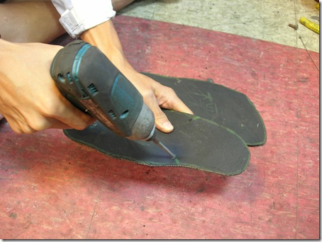
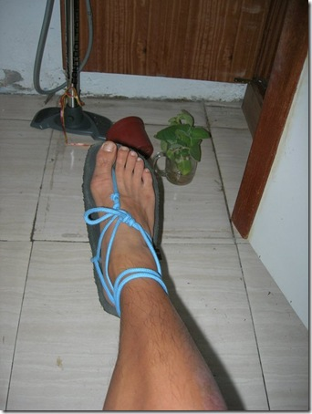

看完《天生就會跑》後製作 Huarache 練跑後的心得

- ### 這是改用肌肉的跑法
穿 Huarache 與一般跑鞋最大的差別在於肌肉的使用比例。穿上它以後，你必須利用更多肌肉──除了原本跑步主要會用到的小腿、前後大腿等肌群與阿斯里斯鍵外，穿 Huarache 時會增加肌群的負荷（尤其是小腿），還會用到平常跑步時不會用到的小肌群──如後大腿肌肉、腳掌足弓、前脛。因此，肌肉的疲勞會更為顯著，也更容易拉傷肌肉。所以一開始千萬不要跑太多。
- 好處是：肌肉會因為這樣的鍛鍊而變強，因此更容易改成在《鐵人三項》一書中所提到的銳「腳」跑法──用肌肉來緩衝著地時的衝擊，而非膝蓋或骨頭。
- ### 固定 Huarache 需要經驗與多次嚐試
我會在布落格上放教學影片，它有特殊的固定方式，讓你的腳掌可以完全浮貼在底皮上，但又不能太緊，會不舒服。這需要經驗。
曾有網友問過一些問題，下面舉出來，當作經驗分享：
Alan Chang ：請問夾腳那個地方不會磨破皮嗎?
國峰 ：一開始會有點不適！畢竟夾腳的地方從來沒經過長時間的刺激……幾個月前我先從十公里內測試，最先不適的地方就是夾腳處，但是一不舒服我就先停下來。三個星期後，就可以一次跑到二十公里，完全沒事。目前測試最長距離是 40 公里，夾腳處完全沒有感覺。依我個人的嚐試與經驗，只要固定妥當(最近會花時間拍攝如何固定的影片給大家看)，再花幾個星期習慣後，是完全不會破皮的。
Alan Chang ：謝謝你的回應，因為我之前穿夾腳拖鞋走比較遠的路就會很不舒服，所以才會有這個疑慮。
國峰 ：我了解。我也有過這個顧慮，也想過這個問題（因為曾有某個「機緣」穿著夾腳拖在台十一線上跑了十四公里），夾腳處磨到不行。但因為夾腳拖鞋，在左／右／後側都沒有固定，所以會造成夾腳處一直移動，移動就會造成磨擦，自然會不舒服。但 Huarache 的固定方式，可以在跑步過程中幾乎完全沒有移動，所以才不會磨破皮
- ### 不管你多厲害，第一次練習不要跑超過 5 公里！
就我個人的經驗，我是已經赤腳跑三個月後，才在機緣下找齊材料完成這雙鞋。第一次也才跑三公里，後來慢慢增加，從五公里、十公里到二十公里都沒問題後，直到十一月才一次跑超過四十公里。所以是在六個月的「非一般跑鞋」練習下才能一次跑超過馬拉松的距離，故而剛開始時千萬別太著急，一下就跑太多，以免受傷。
曾有網友問過一些問題，下面舉出來，當作經驗分享：
曉春 ：曉春覺得這樣一點都不安全。你的腳或許可以，別人的能力未必可以跟你一樣哦...
國峰： 曉春說得沒錯！一般人可能不適合嘗試(最好有跑馬經驗的人比較合適)。如曉春所說，一般人可能要「非常小心」，小腿肌、阿基里斯腱、足弓不夠強壯的人，可能更要「非常小心」，否則可能拉傷肌肉。但相對地，如果用它慢慢增加里程，小腿肌、阿基里斯腱、足弓也會慢慢變強壯！以上純粹個人經驗分享，不一定適用於你或其他人。所有的事情都要嘗試過才知道適不適合自己，適合自己不一定是絕對的「對」，不適合自己也不一定是絕對的「錯」，可能只是「不適合自己而已！」
* 目前穿它最長里程數有40 公里、45 公里與50 公里，至 12/04 為止，總里程數 380 公里。就我個人的經驗而言，目前鞋況和腳況都很好！

- ### Huarache 和一般跑鞋的優劣差異何在？
一般正常跑鞋 | Huarache
---|---
適合初學者 | 比較適合進階跑者與小朋友(見下註 1)
「比較」適合腳跟著地跑法 | 「比較」適合腳掌前緣著地的跑法
可以用腳掌 Rolling 前進慢步頻跑法 | 需要一點地就抬起來的快步頻跑法
腳掌比較有空間在鞋底滑動 | 不能滑動，太常滑動會造成夾腳處磨傷
對肌肉負擔小 | 對肌肉負擔大(見下註 2)
【優】夾腳處絕對 ok。 | 【劣】如果腳掌滑動太嚴重，夾腳處會磨傷
【劣】腳指頭會一直撞到鞋子前方，很容易因此受傷。 | 【優】腳指頭不會在跑步過程中撞到鞋緣
【劣】腳掌悶在裡頭，很容易累積汗水，造成腳底在鞋裡滑動，形成水泡。 | 【優】腳掌通風良好，不易流汗。腳掌可以邊跑邊曬太陽，涼爽舒適，不易得香港腳。
【優】慢跑、快跑都適合！ | 【劣】就我個人經驗而言，每公里四分半以上都很 ok，但如果每公里少於四分鐘時，穿 Huarache 就不太好跑。
【劣】因為鞋子外層與鞋墊保護良好，故而無法鍛鍊腳掌肌肉。 | 【優】鍛鍊腳掌足弓肌肉
【優】腳掌被保護得很好，不易因外物而受傷。 | 【劣】如果一不注意，容易被外物割傷腳掌。我曾在跑長距離時最後分心，被自己的底皮割傷腳裸。
【註 1】因為小朋友天生就可以赤腳在外面跑來跑去，他們還沒養成被鞋子保護的跑法，所以反而比大人更適合赤腳，或用 Huarache 來跑步。
【註 2】對肌肉負擔大。反面來看，就是可以藉由這樣的訓練來鍛鍊跑步所需的肌肉強度。但對初學者來說要小心，很容易造成肌肉拉傷，不宜過度勉強。